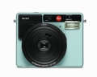
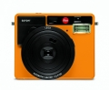
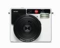
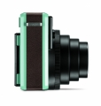
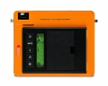

器材库 > 胶片袖珍相机（PS） > SOFORT

规格总览
发布日期
2016-09-15
产品类型
一次成像照相机
使用胶卷/胶片
徕卡一次成像彩色/黑白胶片“Instax mini”（ISO 800）
画幅
62×46mm
镜头及对焦
镜头
60mm f/12.7（35mm等效焦距为34mm）
对焦范围
0.6m - 3m
曝光控制
曝光模式
自动拍摄，自拍，人物和聚会拍摄，动态和运动拍摄，B门，微距，自拍定时，双倍曝光
快门速度
1/8 - 1/400 秒（机械快门）
自拍
2秒/10秒
取景规格
取景器
实像变焦光学取景器，0.37x，在微距模式下带目标选取和视差补偿功能
闪光灯
内置闪光灯
有
闪光模式
自动、强制开启，强制关闭，强制开启（带红眼消除功能）
其它规格
电池
锂电池(3.7V, 740mAh, 2.6 Wh)
颜色
白色, 橙色, 薄荷绿
尺寸
124×94×58mm
重量
305g
cybertron2016-11-22 05:144.58 分
操作性 4.50功能性 5.00美观性 5.00趣味性 5.00耐用性 4.50性价比 3.50
产品图 / 样片
SOFORT

SOFORT

SOFORT

SOFORT

SOFORT
评测 / 相关文章
- 详细内容 （存档）
- 掌心的小确幸 徕卡Sofort拍立得试用 （存档）
相关文章
- ［试用］掌心的小确幸 徕卡Sofort拍立得试用 （存档）
- ［资讯］噱头还是硬货 徕卡SOFORT相机登场 （存档）
- ［资讯］徕卡SOFORT发布全新黑色款 （原站已下线）